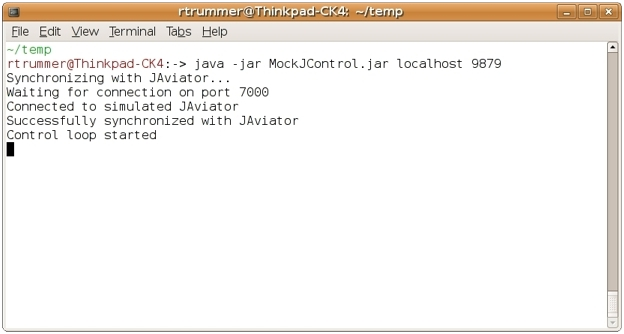
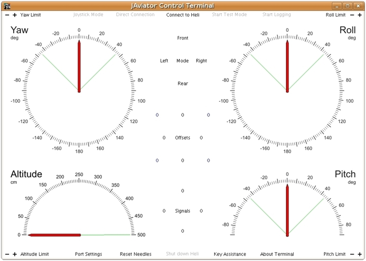
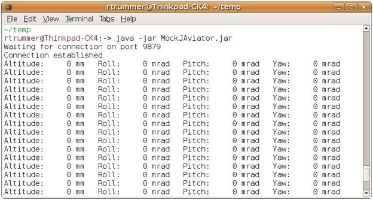

Control System Demo Software
The three pictures below depict the applications included in the demo software package, in particular, the MockJControl helicopter control program (left), the Control Terminal piloting application (middle), and the MockJAviator helicopter simulation program (right). Accordingly, the package comprises of three JAR files, which can be executed on any standard Java Virtual Machine (JVM). Since this demo package is primarily intended to give an impression about the software we are working on, it has been stripped down such that neither additional third-party software nor any special JVM is required. In order to run the downloaded binaries, simply click the how-to button and follow the instructions.
- 
- 
- 
Package Description
The MockJControl program is the 'brain' of the distributed control system. It runs the different controllers required for stabilizing and navigating the JAviator helicopter and brings all components of the JAviator's software system together.
The Control Terminal application is used to display the current attitude and altitude of the helicopter and issue navigation commands. Moreover, it indicates the current helicopter mode and controller state, displays each individual controller's contribution as well as the assigned motor signals.
The MockJAviator program serves to simulate the JAviator helicopter. Similar to the real JAviator, it provides sensor data and accepts motor signals. A known limitation is that the yaw angle is limited to +/-90 degrees, i.e., setting yaw angles exceeding this range will cause the simulator to crash.